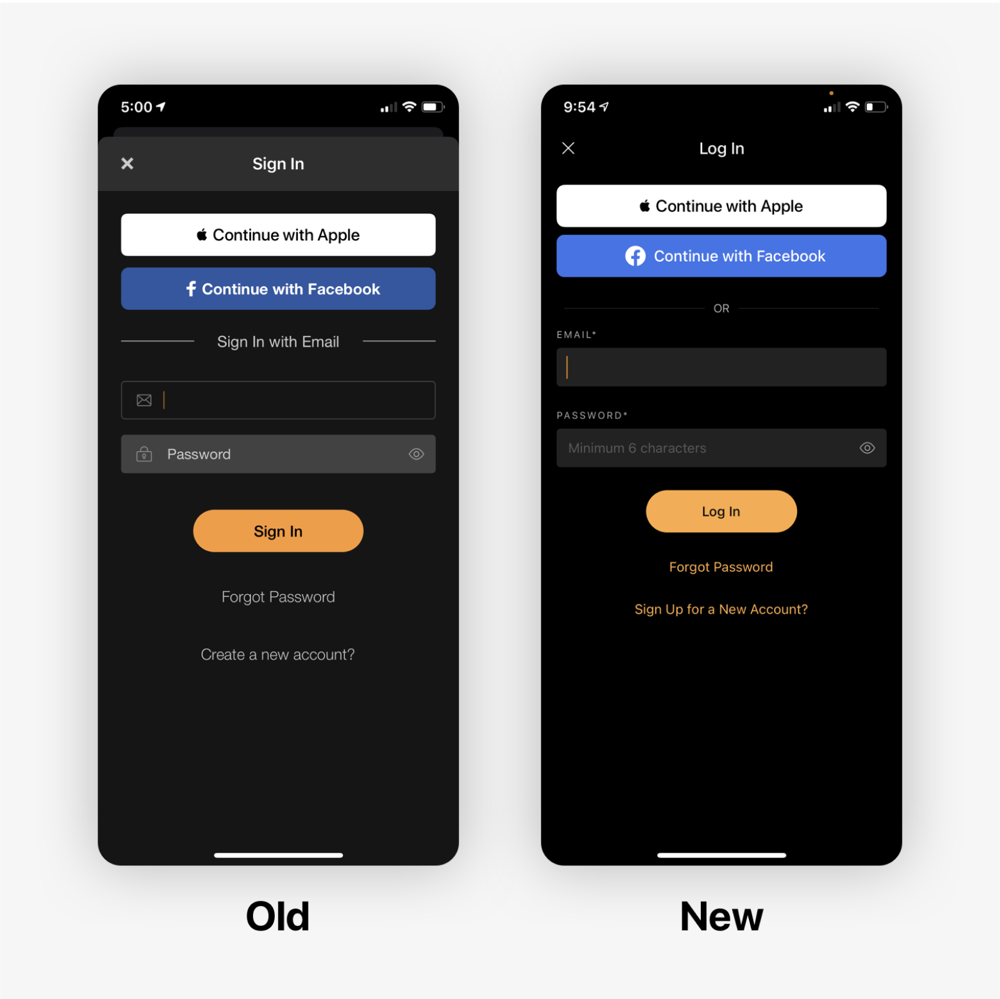

SoundHound
Ongoing
UI/UX
Overview
SoundHound is a music discovery app available on iOS and Android. While it has mainly been used as for music identification, the increased prevalance of streaming over the years has provided a new opportunity for growth. As a UX designer at SoundHound, I worked with a small team to bring new features and visual updates across the app on both platforms.

Playlists
As streaming became the most common way of experiencing music, we looked into how to incorporate a more personalized experience for SoundHound users. Playlists were created with the intention of helping users curate their discoveries, find music similar to their favorites, and overall expand the app's role from solely being for music identification.
 We initially launched with a simple design of a playlists page to gauge user interest and did some user testing to gather feedback on what they wanted in such a feature. Many users stated that they preferred a curation of music based on their listening habits and favorites, and that a discovery app such as SoundHound should curate based on their discovered songs. Following this, we created a second phase design that focused on these requests and emphasized the newly-added feature of creating one's own custom playlist. In a user polling session, we found that a strong majority preferred the new design with side-scrolling and main playlists at the top.
We initially launched with a simple design of a playlists page to gauge user interest and did some user testing to gather feedback on what they wanted in such a feature. Many users stated that they preferred a curation of music based on their listening habits and favorites, and that a discovery app such as SoundHound should curate based on their discovered songs. Following this, we created a second phase design that focused on these requests and emphasized the newly-added feature of creating one's own custom playlist. In a user polling session, we found that a strong majority preferred the new design with side-scrolling and main playlists at the top.

Artists & Albums
As part of SoundHound's app refresh, I redesigned the pages for artists and albums to bring them more in-line with an updated style guide.


Settings
We redid settings and sign-up pages.
 Settings Refresh
Settings Refresh
We redesigned the settings page to reduce the number of sections and remove parts that were either no longer of use or options that were not applicable to the vast majority of users.  Sign-Up Refresh
The sign-up flow also went under a refresh, where we aimed to clean up the consistency of the text and clarify the requirements for each text field.